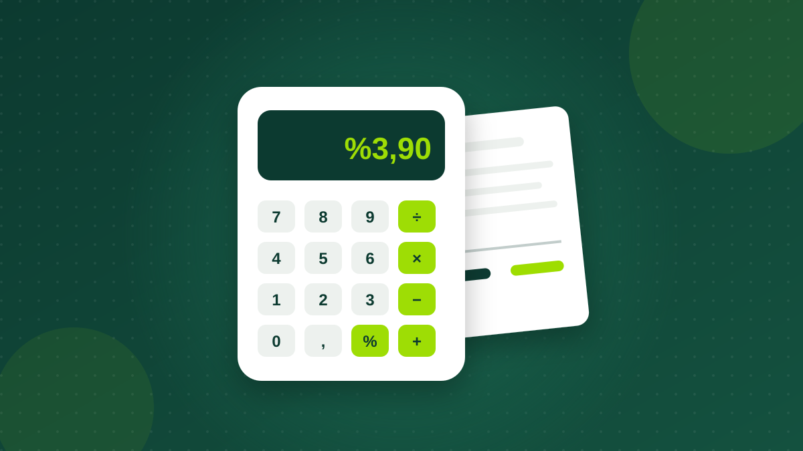

Krediyi Erken Kapatmak Avantajlı mı?
Elinize toplu para geçtiğinde krediyi kapatmak mı, birikimde tutmak mı? Erken kapamanın kuralları ve hesabı.

Aylık faiz oranı tek başına yeterli değil. Vergiler, dosya masrafı ve yıllık maliyet oranıyla bir kredinin size gerçekte kaça mal olduğunu adım adım hesaplayın.

Kredi tekliflerini karşılaştırırken çoğumuz ilk olarak aylık faiz oranına bakarız. Oysa iki teklif arasındaki gerçek fark çoğu zaman faize eklenen vergilerde, dosya masrafında ve vadede gizlidir. Bu yazıda bir kredinin toplam maliyetini oluşturan kalemleri tek tek açıklıyor ve örnek bir hesapla sonucu birlikte buluyoruz.
Bankanın ilan ettiği aylık oran akdi faiz olarak adlandırılır. Eşit taksitli kredilerde her ay ödediğiniz taksidin bir kısmı faize, kalan kısmı anaparaya gider. İlk aylarda kalan anapara yüksek olduğu için taksidin büyük bölümü faizdir; vade ilerledikçe anapara payı artar.
Faiz oranındaki küçük farklar uzun vadede büyür. Aylık 0,10 puanlık bir fark, 36 aylık bir ihtiyaç kredisinde toplam geri ödemeyi belirgin şekilde değiştirebilir. Bu yüzden teklifleri aynı tutar ve aynı vade üzerinden karşılaştırmak gerekir.
Bireysel kredilerde faize iki ayrı yük eklenir:
Bu iki vergi anaparaya değil, her taksitteki faiz tutarına eklenir. Yani aylık %3,00 faizli bir ihtiyaç kredisinde efektif aylık oran 3,00 × 1,30 = %3,90 olur. Bireysel konut kredileri ise KKDF ve BSMV'den muaftır; konut kredisinde ilan edilen faiz, taksit hesabında doğrudan kullanılır.
| Kredi türü | KKDF | BSMV | Aylık %3,00 faizin vergili karşılığı |
|---|---|---|---|
| İhtiyaç kredisi | %15 | %15 | %3,90 |
| Taşıt kredisi | %15 | %15 | %3,90 |
| Konut kredisi | Yok | Yok | %3,00 |
Bankalar kredi kullandırırken kredi tahsis ücreti (halk arasında dosya masrafı) alabilir. Bireysel kredilerde bu ücret, kredi tutarının binde 5'ini aşamaz. 100.000 TL'lik bir kredide en fazla 500 TL demektir.
Bunun dışında kredi türüne göre ekspertiz ücreti, ipotek tesis ücreti ya da sigorta primleri gündeme gelebilir. Hayat sigortası gibi ürünler bazı bankalarda kampanya koşulu olarak sunulur; teklif alırken sigortanın zorunlu olup olmadığını ve primini mutlaka sorun.
Hesabı somutlaştıralım. Aylık %3,00 akdi faizle, 12 ay vadeli 100.000 TL'lik bir ihtiyaç kredisi kullandığınızı düşünelim.
Vergiler olmasaydı taksit 10.046,21 TL olurdu. KKDF ve BSMV bu örnekte toplamda yaklaşık 6.567 TL ek maliyet yaratıyor.
İlk taksitteki dağılıma bakmak da faydalı: 100.000 TL'nin bir aylık faizi 3.000 TL'dir. Buna 450 TL KKDF ve 450 TL BSMV eklenir. Taksidin geri kalanı anaparayı azaltır.
Uzun vade aylık taksidi düşürür ama toplam ödemeyi artırır. Aynı 100.000 TL'lik kredi için vergili %3,90 aylık oranla yaklaşık rakamlar şöyle:
| Vade | Aylık taksit | Toplam taksit |
|---|---|---|
| 12 ay | 10.593 TL | 127.122 TL |
| 24 ay | 6.492 TL | 155.801 TL |
| 36 ay | 5.216 TL | 187.765 TL |
36 ay vadede aylık taksit 12 aya göre yarıya yakın düşerken, toplam ödeme 60.000 TL'den fazla artıyor. Doğru vade, bütçenizi zorlamayan en kısa vadedir.
Bankalar, sözleşme öncesinde size bir bilgi formu vermek zorundadır. Bu formdaki yıllık maliyet oranı; faizi, vergileri ve tahsis ücreti gibi kalemleri birlikte yansıtır. Farklı faiz ve masraf yapısına sahip teklifleri karşılaştırmanın en adil yolu bu orana bakmaktır.
Teklifleri her zaman aynı tutar ve aynı vadeyle karşılaştırın. Faiz oranı düşük ama masrafı yüksek bir teklif, toplamda daha pahalıya gelebilir.
Faiz, KKDF, BSMV ve dosya masrafı dahil taksitleri bankalara göre karşılaştırın.
Kredi hesaplaHayır. Bireysel konut kredileri KKDF ve BSMV'den muaftır. Bu nedenle konut kredisinde ilan edilen faiz oranı taksit hesabında doğrudan kullanılır.
Bireysel kredilerde kredi tahsis ücreti, kullandırılan kredi tutarının binde 5'ini aşamaz.
Karşılaştırma için yıllık maliyet oranı daha doğru bir göstergedir, çünkü faizin yanında vergileri ve masrafları da içerir.
Bu yazı genel bilgilendirme amaçlıdır. Oranlar, vergiler ve yasal sınırlar değişebilir; kesin koşullar için bankanızın sözleşme öncesi bilgi formunu inceleyin.